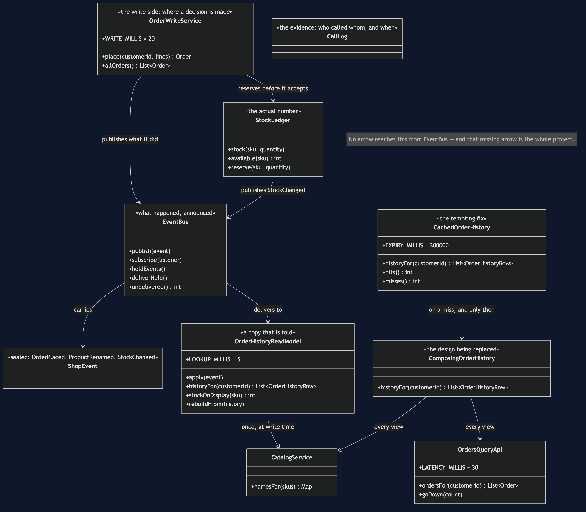

CQRS — Class Diagram

The Two Halves
The diagram splits down the middle, and the split is the pattern.
On the write side are OrderWriteService and StockLedger. This is where something is decided. An order is placed only if the ledger will reserve the stock, and the ledger holds the actual number — not a copy of it, not a recent view of it, the number. Everything a customer is charged for happens here.
On the read side is OrderHistoryReadModel. It decides nothing. It holds rows that are already assembled and hands them over, and LOOKUP_MILLIS = 5 is what that costs. Crucially, serving a page from it calls no other service at all.
Between the two halves is EventBus, and it only goes one way: the write side announces, the read side listens. The read side has no route back.
The Missing Arrow
The most important thing in the diagram is the arrow that is not there.
CachedOrderHistory has no connection to EventBus. It cannot. A cache is not a subscriber; it is a box that remembers what it was given and forgets on a timer. When Catalog renames a product, the event goes out, the read model updates — and the cache sits there, confidently wrong, until EXPIRY_MILLIS runs out.
That is the difference between the two copies, and it is structural rather than a matter of configuration. aRenameCannotInvalidateIt and itIsCorrectedByATimerAndNothingElse are that missing arrow, written as tests.
Why ComposingOrderHistory Is Still Here
It is the design being replaced, and it is kept because the comparison has to be fair. It uses OrdersQueryApi and CatalogService on every view, and it does so correctly — the catalog call is batched. composingPaysEveryTime measures it, and aReadCostsOneLookup measures the alternative. Neither number means anything without the other.
The Event Type
ShopEvent is a sealed interface with three records: OrderPlaced, ProductRenamed, StockChanged. Sealed matters here for a small, practical reason — OrderHistoryReadModel.apply switches over it, and the compiler will tell you when a new kind of event has been added and the projection has not been taught about it.
That is a real hazard in this pattern. A projection that silently ignores an event it has never heard of is exactly how a read model drifts away from the truth without anybody noticing.
CallLog And SimulatedClock
Both designs produce an identical page, so the only way to see the difference between them is to count calls and read the clock. CallLog records who was called, when, and what came back, and SimulatedClock advances by fixed amounts — thirty milliseconds for an Orders call, sixty for Catalog, five for a read-model lookup.
Nothing in this project sleeps. The timings in act one and act two are exact, repeatable on any machine, and free.
EventBus.holdEvents()
This exists for one scene only, and it is not a trick. Act three needs to show a customer whose order is placed, paid for and final, looking at a page with nothing on it — so delivery is held, the page is read, and then delivery is allowed to catch up.
Real message delivery takes time. holdEvents makes that duration visible instead of leaving it to a paragraph of prose.